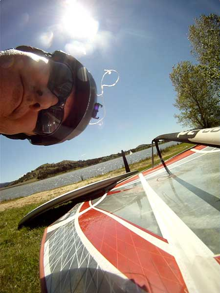
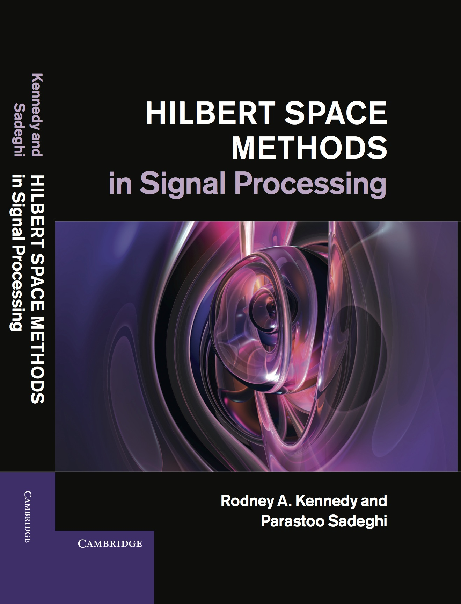

|
Research School of Engineering
College of Engineering and Computer Science
Australian National University
|
 |
Biography:
Rodney A. Kennedy has been Full Professor in Engineering at the Australian National University since 2000 and is currently the Head of the Applied Signal Processing research group and the Associate Director (Education) within the Research School of Engineering. He is an electrical engineer with research specialization in wireless communications, signal processing and audio signal processing.
He has been Head of the Departments of Information Engineering and Telecommunications Engineering in the Research School of Information Sciences and Engineering between 1994 and 2008, and Director of Research 2009–2010. Professor Kennedy has received over 30 external grants and industry contracts/university consultancies including 15 ARC grants. In addition he has a leading participant in major research centers including the Cooperative Research Centre for Robust and Adaptive Systems (CRASys), National ICT Australia (NICTA) and the ARC Communications Research Network (ACoRN).
He is an IEEE Fellow and has published in excess of 350 journal papers, conference papers and patents, and has supervised over 45 PhD students. He was an Associate editor for 11 years in the IEEE Transactions on Communications and a member of a number of journal editorial boards. He is a former QEII Fellow and recipient of a number awards including the ATERB medal and the UNSW University medal.
|
News
Nov 2014 — ARC Discovery Project DP150101011 , Harnessing Spherical Geometry in Scientific and Engineering Data Processing, with CI Salman Durrani and PI Jason McEwen (MSSL-UCL) secured research funding. The overall success rate for Discovery Projects for funding commencing in 2015 is 18 per cent. The grant also came with 2 ICA awards, which have a 13 per cent success rate.
Jul 2014 — Presentation for Royal Society meeting “Science on the Sphere”.
May 2014 — Three 2014 ICASSP papers have been presented in Florence (these can be downloaded below).
Mar 2014 — 22nd Int. Conf. on Telecommunications ICT will be held in Sydney,
Australia, 27-29 April 2015, right after ICASSP 2015 in Brisbane.
Feb 2014 — Three 2014 ICASSP papers have been accepted and will be presented in Florence in May.
Jan 2014 — Two 2014 ICC papers have been accepted and will be presented in Sydney in June.
Research Interests
signal processing theory and algorithms
with applications in wireless communications, audio and acoustics, and astrophysics
signal representations, signal concentration, dimensionality, uncertainty principles
Hilbert space and spectral methods
time-frequency and spatio-spectral methods
relay cooperative networks
timing, frequency and carrier synchronization
decode-and-forward (DF) and amplify-and-forward (AF) relaying networks,
channel estimation, multi-parameter estimation
2-sphere or spherical domain signal processing, commutative anisotropic convolution
medical image registration
compressed sensing methods for sparse systems
Recent Publications
|
 |
My Recent Publications: most can be found here at:
which also lists my arxiv.org preprints. This listing excludes my 2013 book, (written with co-author A/Prof Parastoo Sadeghi),
and excludes book chapters, papers in Physics journals (such as JASA) and most conference papers.
A reverse chronological list of most of my publications can be obtained by following this @pubs.html link@.
|
Publications 2015 (including arXiv preprints)
[1]
A. A. Nasir, X. Zhou, S. Durrani, and R. A. Kennedy, "Wireless-Powered Relays in Cooperative Communications: Time-Switching Relaying Protocols and Throughput Analysis", IEEE Trans. Commun., 2015.
DOI: 10.1109/TCOMM.2015.2415480
PDF: 1310.7648
Google-Scholar: [1]
arXiv: http://arxiv.org/abs/1310.7648
Abstract: We consider wireless-powered amplify-and-forward and decode-and-forward relaying in cooperative communications, where an energy constrained relay node first harvests energy through the received radio-frequency signal from the source and then uses the harvested energy to forward the source information to the destination node. We propose time-switching based energy harvesting (EH) and information transmission (IT) protocols with two modes of EH at the relay. For continuous time EH, the EH time can be any percentage of the total transmission block time. For discrete time EH, the whole transmission block is either used for EH or IT. The proposed protocols are attractive because they do not require channel state information at the transmitter side and enable relay transmission with preset fixed transmission power. We derive analytical expressions of the achievable throughput for the proposed protocols. The derived expressions are verified by comparison with simulations and allow the system performance to be determined as a function of the system parameters. Finally, we show that the proposed protocols outperform the existing fixed time duration EH protocols in the literature, since they intelligently track the level of the harvested energy to switch between EH and IT in an online fashion, allowing efficient use of resources.
@article{KennedyJ2015d,
title = {Wireless-Powered Relays in Cooperative Communications: Time-Switching Relaying Protocols and Throughput Analysis},
author = {Nasir, A. A. and Zhou, X. and Durrani, S. and Kennedy, R. A.},
journal = {{IEEE} Trans. Commun.},
year = {2015}}
[2]
Y. F. Alem, Z. Khalid, and R. A. Kennedy, "3D Spatial Fading Correlation for Uniform Angle of Arrival Distribution", IEEE Commun. Lett., 2015.
DOI: 10.1109/LCOMM.2015.2414414
PDF: spatcorr-uniform-preprint.pdf
Google-Scholar: [link]
Abstract: We derive a closed-form expression for the spatial fading correlation (SFC) between two arbitrary points in 3D- space for the uniform limited azimuth-elevation angle of arrival probability density function (pdf). This expression simplifies the computation of the SFC, can be used in any 3D antenna array ge- ometry, and avoids the need to generate separate expressions for specific antenna array geometries. We corroborate the accuracy of the closed-form expression through application to 2D and 3D antenna array geometries. We expect the results presented in this letter to be of significant importance for performance evaluation and sensitivity analysis in multi-input multi-output (MIMO) systems.
@article{KennedyJ2015c,
title = {{3D} Spatial Fading Correlation for Uniform Angle of Arrival Distribution},
author = {Alem, Y. F. and Khalid, Z. and Kennedy, R. A.},
journal = {{IEEE} Commun. Lett.},
year = {2015}}
[3]
P. D. Samarasinghe and R. A. Kennedy, "Analysis and Performance of CMA Blind Deconvolution for Image Restoration", Int. J. Adapt. Control Signal Process., 2015.
DOI: 10.1002/acs.2526
PDF: acs2526.pdf
Google-Scholar: [link]
Abstract: In this paper we study the applicability of classical blind deconvolution methods such as constant modulus algorithm (CMA) for blind adaptive image restoration. The requirements such as the source to be white, uniformly distributed and zero mean, which yield satisfactory convergence in the data communication application context, are revisited in the image restoration context, where a linear deblur kernel needs to be blindly adapted to compensate for an unknown image blur kernel with the objective to recover a source ground truth image. Through analysis and performance studies, we show that the performance of CMA is adversely affected by the intrinsic spatial correlation of natural images and by any deviation of their distribution from being platykurtic. We also show that decorrelation techniques designed to overcome spatial correlation cannot be effectively applied to rectify CMA performance for blind adaptive image restoration.
@article{KennedyJ2015b,
title = {Analysis and Performance of {CMA} Blind Deconvolution for Image Restoration},
author = {Samarasinghe, P. D. and Kennedy, R. A.},
journal = {Int. J. Adapt. Control Signal Process.},
year = {2015}}
[4]
M. Zhang, R. A. Kennedy, and T. D. Abhayapala, "Empirical Determination of Frequency Representation in Spherical Harmonics-based HRTF Functional Modeling", IEEE/ACM Trans. Audio Speech Language Process., vol. 23, no. 2, pp. 351-360, February 2015.
DOI: 10.1109/TASLP.2014.2381881
PDF: 06987336.pdf
Google-Scholar: [link]
Abstract: This paper considers a functional modeling of a head-related transfer function (HRTF) where the spatial-portion is constrained to be expanded using spherical harmonics and the frequency-portion is expanded in terms of standard closed-form orthonormal functions, which may be user selected. We derive an objective evaluation metric to compare the relative energy efficiencies of candidate functional models using empirical HRTF database measurements and robust estimation techniques. Among four sets of closed-form orthonormal functions the complex exponentials are identified as the most efficient to represent the frequency-portion in the spherical harmonics-based HRTF functional model. The proposed model is evaluated across three HRTF data sets: 1) CIPIC database, 2) the MIT KEMAR (Knowles Electronics Mannequin for Acoustics Research) database, and 3) the ANU KEMAR database.
@article{KennedyJ2015a,
title = {Empirical Determination of Frequency Representation in Spherical Harmonics-based {HRTF} Functional Modeling},
author = {Zhang, M. and Kennedy, R. A. and Abhayapala, T. D.},
journal = {{IEEE/ACM} Trans. Audio Speech Language Process.},
volume = {23},
pages = {351-360},
month = {February},
year = {2015}}
[5]
Y. Cong, X. Zhou, and R. A. Kennedy, "Interference Prediction in Mobile Ad Hoc Networks with a General Mobility Model", IEEE Trans. Wireless Commun., 2015.
DOI: 10.1109/TWC.2015.2418763
PDF: 1503.08889.pdf
Google-Scholar: [link]
arXiv: http://arxiv.org/abs/1503.08889
Abstract: In a mobile ad hoc network (MANET), effective prediction of time-varying interferences can enable adaptive transmission designs and therefore improve the communication performance. This paper investigates interference prediction in MANETs with a finite number of nodes by proposing and using a general-order linear model for node mobility. The proposed mobility model can well approximate node dynamics of practical MANETs. In contrast to previous studies on interference statistics, we are able through this model to give a best estimate of the time-varying interference at any time rather than long-term average effects. Specifically, we propose a compound Gaussian point process functional as a general framework to obtain analytical results on the mean value and moment-generating function of the interference prediction. With a series form of this functional, we give the necessary and sufficient condition for when the prediction is essentially equivalent to that from a Binomial Point Process (BPP) network in the limit as time goes to infinity. These conditions permit one to rigorously determine when the commonly used BPP approximations are valid. Finally, our simulation results corroborate the effectiveness and accuracy of the analytical results on interference prediction and also show the advantages of our method in dealing with complex mobilities
@article{KennedyJ2015e,
title = {Interference Prediction in Mobile Ad Hoc Networks with a General Mobility Model},
author = {Cong, Y. and Zhou, X. and Kennedy, R. A.},
journal = {{IEEE} Trans. Wireless Commun.},
year = {2015}}
[6]
A. P. Bates, Z. Khalid, and R. A. Kennedy, "Novel Sampling Scheme on the Sphere for Head-Related Transfer Function Measurements", IEEE/ACM Trans. Audio Speech Language Process., 2015.
DOI: 10.1109/TASLP.2015.2419971
PDF: bates-preprint.pdf
Abstract: This paper presents a novel sampling scheme on the sphere for obtaining head-related transfer function (HRTF) measurements and accurately computing the spherical harmonic transform~(SHT). The scheme requires an optimal number of samples, given by the degrees of freedom in the spectral domain, for the accurate representation of the HRTF that is band-limited in the spherical harmonic domain. The proposed scheme allows for the samples to be easily taken over the sphere due to its iso-latitude structure and non-dense sampling near the poles. In addition, the scheme can be used when samples are not taken from the south polar cap region of the sphere as the HRTF measurements are not reliable in south polar cap region due to reflections from the ground. Furthermore, the scheme has a hierarchical structure, which enables the HRTF to be analysed at different audible frequencies using the same sampling configuration. In comparison to the proposed scheme, none of the other sampling schemes on the sphere simultaneously possess all these properties. We conduct several numerical experiments to determine the accuracy of the SHT associated with the proposed sampling scheme. We show that the SHT attains accuracy on the order of numerical precision $(10^-14)$ when samples are taken over the whole sphere, both in the optimal sample placement and hierarchical configurations, and achieves an acceptable level of accuracy $(10^-5)$ when samples are not taken over the south polar cap region of the sphere for the band-limits of interest. Simulations are used to show the accurate reconstruction of the HRTF over the whole sphere, including unmeasured locations.
@article{KennedyJ2015f,
title = {Novel Sampling Scheme on the Sphere for Head-Related Transfer Function Measurements},
author = {Bates, A. P. and Khalid, Z. and Kennedy, R. A.},
journal = {{IEEE/ACM} Trans. Audio Speech Language Process.},
year = {2015}}
[7]
A. P. Bates, Z. Khalid, and R. A. Kennedy, "An Optimal Dimensionality Sampling Scheme on the Sphere for Antipodal Signals in Diffusion Magnetic Resonance Imaging", Proc. IEEE Int. Conf. Acoustics, Speech and Signal Processing, ICASSP'2015, Brisbane, Australia, April 2015 (accepted 15 January 2015).
PDF: 1502.07099v1.pdf
arXiv: http://arxiv.org/abs/1502.07099
Abstract: We propose a sampling scheme on the sphere and develop a cor- responding spherical harmonic transform (SHT) for the accurate re- construction of the diffusion signal in diffusion magnetic resonance imaging (dMRI). By exploiting the antipodal symmetry, we design a sampling scheme that requires the optimal number of samples on the sphere, equal to the degrees of freedom required to represent the antipodally symmetric band-limited diffusion signal in the spec- tral (spherical harmonic) domain. Compared with existing sampling schemes on the sphere that allow for the accurate reconstruction of the diffusion signal, the proposed sampling scheme reduces the num- ber of samples required by a factor of two or more. We analyse the numerical accuracy of the proposed SHT and show through experi- ments that the proposed sampling allows for the accurate and rota- tionally invariant computation of the SHT to near machine precision accuracy.
@inproceedings{KennedyC2015a,
title = {An Optimal Dimensionality Sampling Scheme on the Sphere for Antipodal Signals in Diffusion Magnetic Resonance Imaging},
author = {Bates, A. P. and Khalid, Z. and Kennedy, R. A.},
booktitle = {Proc. IEEE Int. Conf. Acoustics, Speech and Signal Processing, ICASSP'2015},
address = {Brisbane, Australia},
month = {April},
year = {2015 (accepted 15 January 2015)}}
[8]
N. Ding, R. A. Kennedy, and P. Sadeghi, "Fairest Solution in Constant Sum-rate Transmission Strategies for Cooperative Data Exchange: An M-convex Minimization Approach", Proc. 22nd Int. Conf. on Telecommunications, Sydney, Australia, April 2015.
PDF: ict-1570068155.pdf
Abstract: We consider the fairness in cooperative data exchange (CDE) problem among a set of wireless clients. In this system, each client initially obtains a subset of the packets. They exchange packets in order to reconstruct the entire packet set. We study the problem of how to find a transmission strategy that distributes the communication load most evenly in all strategies that have the same sum-rate (the total number of transmissions) and achieve universal recovery (the situation when all clients recover the packet set). We formulate this problem by a discrete minimization problem and prove its M-convexity. We show that our results can also be proved by the submodularity of the feasible region shown in previous works and are closely related to the resource allocation problems under submodular constraints. To solve this problem, we propose to use a steepest descent algorithm (SDA) based on M-convexity. By varying the number of clients and packets, we compare SDA with a deterministic algorithm (DA) based on submodularity in terms of convergence performance and complexity. The results show that for the problem of finding the fairest and minimum sum-rate strategy for the CDE problem SDA is more efficient than DA when the number of clients is up to five.
@inproceedings{KennedyC2015d,
title = {Fairest Solution in Constant Sum-rate Transmission Strategies for Cooperative Data Exchange: An M-convex Minimization Approach},
author = {Ding, N. and Kennedy, R. A. and Sadeghi, P.},
booktitle = {Proc. 22nd Int. Conf. on Telecommunications},
address = {Sydney, Australia},
month = {April},
year = {2015}}
[9]
Z. Khalid and R. A. Kennedy, "Maximal Multiplicative Spatial-Spectral Concentration on the Sphere: Optimal Basis", Proc. IEEE Int. Conf. Acoustics, Speech and Signal Processing, ICASSP'2015, Brisbane, Australia, April 2015 (accepted 15 January 2015).
PDF: 4314.pdf
Abstract: In this work, we design complete orthonormal basis functions, which are referred to as optimal basis functions, that span the vector sum of subspaces formed by band-limited spatially concentrated and space-limited spectrally concentrated functions. The optimal basis are shown to be a linear combination of band-limited functions with maximized energy concentration in some spatial region of interest and space-limited functions which maximize the energy concentra- tion in some spectral region. The linear combination is designed with an optimality condition of maximizing the product of measures of energy concentration in the spatial and spectral domain. We also show that each optimal basis is an eigenfunction of a linear operator which maximizes the product of energy concentration measures in spatial and spectral domain. Finally, we discuss the properties of the proposed optimal basis functions and highlight their usefulness for the signal representation and data analysis due to the simultaneous concentration of the proposed basis functions in spatial and spectral domains.
@inproceedings{KennedyC2015c,
title = {Maximal Multiplicative Spatial-Spectral Concentration on the Sphere: Optimal Basis},
author = {Khalid, Z. and Kennedy, R. A.},
booktitle = {Proc. IEEE Int. Conf. Acoustics, Speech and Signal Processing, ICASSP'2015},
address = {Brisbane, Australia},
month = {April},
year = {2015 (accepted 15 January 2015)}}
[10]
Z. Khalid and R. A. Kennedy, "Spherical Harmonic Transform for Minimum Dimensionality Regular Grid Sampling on the Sphere", Proc. IEEE Int. Conf. Acoustics, Speech and Signal Processing, ICASSP'2015, Brisbane, Australia, April 2015 (accepted 15 January 2015).
PDF: 3819.pdf
@inproceedings{KennedyC2015b,
title = {Spherical Harmonic Transform for Minimum Dimensionality Regular Grid Sampling on the Sphere},
author = {Khalid, Z. and Kennedy, R. A.},
booktitle = {Proc. IEEE Int. Conf. Acoustics, Speech and Signal Processing, ICASSP'2015},
address = {Brisbane, Australia},
month = {April},
year = {2015 (accepted 15 January 2015)}}
Publications 2014
[1]
Z. Khalid and R. A. Kennedy, "On the Placement of Latitudes in Iso-Latitude Optimal-Dimensionality Sampling Schemes on the Sphere", Proc. Int. Conf. Signal Processing and Communication Systems, ICSPCS'2014, Gold Coast, Australia, pp. 7, December 2014.
DOI: 10.1109/ICSPCS.2014.7021060
PDF: 07021060.pdf
Google-Scholar: [link]
Abstract: We analyse the characteristics of spherical harmonics to derive a tighter bound on the minimum number of required measurements to accurately recover a sparse signal in spherical harmonic domain. We numerically show the coherence of spherical harmonic matrix can be reduced from a polynomial order of $N^1/4$ or $N^1/6$ (both achieved by preconditioning) to a logarithmic order, i.e., $\log^2(L)$. Hence, one can, with high probability, recover $s$-sparse spherical harmonic expansions from $M\ge s\log^3N$ measurements randomly sampled from the uniform $\sin\theta\,d\theta \,d\varphi$ measure on sphere.
@inproceedings{KennedyC2014j,
title = {On the Placement of Latitudes in Iso-Latitude Optimal-Dimensionality Sampling Schemes on the Sphere},
author = {Khalid, Z. and Kennedy, R. A.},
booktitle = {Proc. Int. Conf. Signal Processing and Communication Systems, ICSPCS'2014},
address = {Gold Coast, Australia},
pages = {7},
month = {December},
year = {2014}}
[2]
Z. Khalid and R. A. Kennedy, "Iterative Method to Compute the Maximal Concentration Slepian Band-limited Eigenfunction on the Sphere", Proc. Int. Conf. Signal Processing and Communication Systems, ICSPCS'2014, Gold Coast, Australia, pp. 8, December 2014.
DOI: 10.1109/ICSPCS.2014.7021061
PDF: 07021061.pdf
Google-Scholar: [link]
Abstract: We analyse the characteristics of spherical harmonics to derive a tighter bound on the minimum number of required measurements to accurately recover a sparse signal in spherical harmonic domain. We numerically show the coherence of spherical harmonic matrix can be reduced from a polynomial order of $N^1/4$ or $N^1/6$ (both achieved by preconditioning) to a logarithmic order, i.e., $\log^2(L)$. Hence, one can, with high probability, recover $s$-sparse spherical harmonic expansions from $M\ge s\log^3N$ measurements randomly sampled from the uniform $\sin\theta\,d\theta \,d\varphi$ measure on sphere.
@inproceedings{KennedyC2014k,
title = {Iterative Method to Compute the Maximal Concentration Slepian Band-limited Eigenfunction on the Sphere},
author = {Khalid, Z. and Kennedy, R. A.},
booktitle = {Proc. Int. Conf. Signal Processing and Communication Systems, ICSPCS'2014},
address = {Gold Coast, Australia},
pages = {8},
month = {December},
year = {2014}}
[3]
Z. Khalid, R. A. Kennedy, and J. D. McEwen, "An Optimal-Dimensionality Sampling Scheme on the Sphere with Fast Spherical Harmonic Transforms", IEEE Trans. Signal Process., vol. 62, no. 17, pp. 4597-4610, September 2014.
DOI: 10.1109/TSP.2014.2337278
PDF: 06850040.pdf
Google-Scholar: [6]
arXiv: http://arxiv.org/abs/1403.4661
Abstract: We develop a sampling scheme on the sphere that permits accurate computation of the spherical harmonic transform and its inverse for signals band-limited at L using only L2 samples. We obtain the optimal number of samples given by the degrees of freedom of the signal in harmonic space. The number of samples required in our scheme is a factor of two or four fewer than existing techniques, which require either 2L^2 or 4L^2 samples. We note, however, that we do not recover a sampling theorem on the sphere, where spherical harmonic transforms are theoretically exact. Nevertheless, we achieve high accuracy even for very large band-limits. For our optimal-dimensionality sampling scheme, we develop a fast and accurate algorithm to compute the spherical harmonic transform (and inverse), with computational complexity comparable with existing schemes in practice. We conduct numerical experiments to study in detail the stability, accuracy and computational complexity of the proposed transforms. We also highlight the advantages of the proposed sampling scheme and associated transforms in the context of potential applications.
@article{KennedyJ2014b,
title = {An Optimal-Dimensionality Sampling Scheme on the Sphere with Fast Spherical Harmonic Transforms},
author = {Khalid, Z. and Kennedy, R. A. and McEwen, J. D.},
journal = {{IEEE} Trans. Signal Process.},
volume = {62},
pages = {4597-4610},
month = {September},
year = {2014}}
[4]
O. H. Salim, A. A. Nasir, H. Mehrpouyan, W. Xiang, S. Durrani, and R. A. Kennedy, "Channel, Phase Noise, and Frequency Offset in OFDM Systems: Joint Estimation, Data Detection, and Hybrid Cr\'amer-Rao Lower Bound", IEEE Trans. Commun., vol. 62, no. 9, pp. 3311-3325, September 2014.
DOI: 10.1109/TCOMM.2014.2345056
PDF: 06868950.pdf
Google-Scholar: [link]
Abstract: Oscillator phase noise (PHN) and carrier frequency offset (CFO) can adversely impact the performance of orthogonal frequency division multiplexing (OFDM) systems, since they can result in inter carrier interference and rotation of the signal constellation. In this paper, we propose an expectation conditional maximization (ECM) based algorithm for joint estimation of channel, PHN, and CFO in OFDM systems. We present the signal model for the estimation problem and derive the hybrid Cramer- Rao lower bound (HCRB) for the joint estimation problem. Next, we propose an iterative receiver based on an extended Kalman filter for joint data detection and PHN tracking. Numerical results show that, compared to existing algorithms, the performance of the proposed ECM-based estimator is closer to the derived HCRB and outperforms the existing estimation algorithms at moderate-to-high signal-to-noise ratio (SNR). In addition, the combined estimation algorithm and iterative receiver are more computationally efficient than existing algorithms and result in improved average uncoded and coded bit error rate (BER) performance.
@article{KennedyJ2014c,
title = {Channel, Phase Noise, and Frequency Offset in {OFDM} Systems: Joint Estimation, Data Detection, and Hybrid {Cr\'amer-Rao} Lower Bound},
author = {Salim, O. H. and Nasir, A. A. and Mehrpouyan, H. and Xiang, W. and Durrani, S. and Kennedy, R. A.},
journal = {{IEEE} Trans. Commun.},
volume = {62},
pages = {3311-3325},
month = {September},
year = {2014}}
[5]
A. A. Nasir, X. Zhou, S. Durrani, and R. A. Kennedy, "Throughput and ergodic capacity of wireless energy harvesting based DF relaying network", Proc. IEEE Int. Conf. on Communications, ICC'2014, Sydney, Australia, pp. 4066-4071, June 2014.
DOI: 10.1109/ICC.2014.6883957
PDF: 06883957.pdf
Google-Scholar: [6]
Abstract: In this paper, we consider a decode-and-forward (DF) relaying network based on wireless energy harvesting. The energy constrained relay node first harvests energy through radio-frequency (RF) signals from the source node. Next, the relay node uses the harvested energy to forward the decoded source information to the destination node. The source node transfers energy and information to the relay node through two mechanisms, i) time switching-based relaying (TSR) and ii) power splitting-based relaying (PSR). Considering wireless energy harvesting constraint at the relay node, we derive the exact analytical expressions of the achievable throughput and ergodic capacity of a DF relaying network for both TSR and PSR schemes. Through numerical analysis, we study the throughput performance of the overall system for different system parameters, such as energy harvesting time, power splitting ratio, and signal-to-noise-ratio (SNR). In particular, the throughput performance of the PSR scheme outperforms the throughput performance of the TSR scheme for a wide range of SNRs.
@inproceedings{KennedyC2014e,
title = {Throughput and ergodic capacity of wireless energy harvesting based {DF} relaying network},
author = {Nasir, A. A. and Zhou, X. and Durrani, S. and Kennedy, R. A.},
booktitle = {Proc. IEEE Int. Conf. on Communications, ICC'2014},
address = {Sydney, Australia},
pages = {4066-4071},
month = {June},
year = {2014}}
[6]
O. H. Salim, A. A. Nasir, W. Xiang, and R. A. Kennedy, "Joint channel, phase noise, and carrier frequency offset estimation in cooperative OFDM systems", Proc. IEEE Int. Conf. on Communications, ICC'2014, Sydney, Australia, pp. 4384-4389, June 2014.
DOI: 10.1109/ICC.2014.6884010
PDF: 06884010.pdf
Google-Scholar: [1]
Abstract: Cooperative communication systems employ coopera- tion among nodes in a wireless network to increase data throughput and robustness to signal fading. However, such advantages are only possible if there exist perfect synchronization among all nodes. Impairments like channel multipath, time varying phase noise (PHN) and carrier frequency offset (CFO) result in the loss of synchro- nization and diversity performance of cooperative communication systems. Joint estimation of these multiple impairments is necessary in order to correctly decode the received signal in cooperative systems. In this paper, we propose an iterative pilot-aided algorithm based on expectation conditional maximization (ECM) for joint estimation of multipath channels, Wiener PHNs, and CFOs in amplify-and-forward (AF) based cooperative orthogonal frequency division multiplexing (OFDM) system. Numerical results show that the proposed estimator achieves mean square error performance close to the derived hybrid Cramer-Rao lower bound (HCRB) for different PHN variances.
@inproceedings{KennedyC2014f,
title = {Joint channel, phase noise, and carrier frequency offset estimation in cooperative {OFDM} systems},
author = {Salim, O. H. and Nasir, A. A. and Xiang, W. and Kennedy, R. A.},
booktitle = {Proc. IEEE Int. Conf. on Communications, ICC'2014},
address = {Sydney, Australia},
pages = {4384-4389},
month = {June},
year = {2014}}
[7]
Z. Khalid, R. A. Kennedy, S. Durrani, and P. Sadeghi, "Adaptive Multi-Resolution Windowing Technique for Localized Spatio-Spectral Analysis", Proc. 2014 IEEE Workshop on Statistical Signal Processing, SSP'14, Gold Coast, Australia, pp. 41-44, June 2014.
DOI: 10.1109/SSP.2014.6884570
PDF: 06884570.pdf
Google-Scholar: [link]
Abstract: This paper introduces an adaptive, multi-resolution windowing technique that can be used in conjunction with the spatially localized spherical harmonic transform (SLSHT) to process signals on the 2-sphere in the spatio-spectral domain. In contrast with the standard formulation, which uses a fixed window, the new windowing technique is able to respond locally to the signal under analysis, that is, be adaptive, and also is formulated to depend on the spectral degree to give it a multi-resolution character. We further enhance its simultaneous spatial and spectral localization by basing the window on a parametric band-limited Slepian maximum spatial concentration eigenfunction. The criterion for window design is to maximize the energy concentration in each spectral component in the spatio-spectral domain. A computationally efficient method is also developed to implement the adaptive window design. An example is also provided to demonstrate the superiority of the new adaptive, multiresolution window technique.
@inproceedings{KennedyC2014g,
title = {Adaptive Multi-Resolution Windowing Technique for Localized Spatio-Spectral Analysis},
author = {Khalid, Z. and Kennedy, R. A. and Durrani, S. and Sadeghi, P.},
booktitle = {Proc. 2014 IEEE Workshop on Statistical Signal Processing, SSP'14},
address = {Gold Coast, Australia},
pages = {41-44},
month = {June},
year = {2014}}
[8]
P. Sadeghi, R. A. Kennedy, and Z. Khalid, "Minimum Mean Square Error Equalization on the 2-Sphere", Proc. 2014 IEEE Workshop on Statistical Signal Processing, SSP'14, Gold Coast, Australia, pp. 101-104, June 2014.
DOI: 10.1109/SSP.2014.6884585
PDF: 06884585.pdf
Google-Scholar: [link]
Abstract: In this paper we consider the zero-forcing (ZF) and minimum mean square error (MMSE) criteria for signal recovery using linear operators as equalizers for signals observed on the 2-sphere that are subject to linear distortions and noise. The distortions considered are bounded operators and can include convolutions, rotations, spatial and spectral truncations, projections or combinations of these. Likewise the signal and noise are very general being modeled as anisotropic stochastic processes on the 2-sphere. In both the distortion model and signal model the findings in this paper are significantly more general than results that can be found in the literature. The MMSE equalizer is shown to reduce to the ZF equalizer when the distortion operator has an inverse and there is an absence of noise. The ability of the MMSE to recover a Mars topography map signal from a projection operator, which fails to have a ZF solution, is given as an illustration.
@inproceedings{KennedyC2014h,
title = {Minimum Mean Square Error Equalization on the 2-Sphere},
author = {Sadeghi, P and Kennedy, R. A. and Khalid, Z.},
booktitle = {Proc. 2014 IEEE Workshop on Statistical Signal Processing, SSP'14},
address = {Gold Coast, Australia},
pages = {101-104},
month = {June},
year = {2014}}
[9]
A. A. Nasir, H. Mehrpouyan, S. Durrani, S. D. Blostein, and R. A. Kennedy, "Training-based synchronization and channel estimation in AF two-way relaying networks", Proc. 15th IEEE Int. Work. on Signal Processing Advances in Wireless Communications, SPAWC 2014, Toronto, Canada, pp. 269-273, June 2014.
DOI: 10.1109/SPAWC.2014.6941617
PDF: 06941617.pdf
Google-Scholar: [link]
arXiv: http://arxiv.org/abs/1309.6690
Abstract: Two-way relaying networks (TWRNs) allow for more bandwidth efficient use of the available spectrum since they allow for simultaneous information exchange between two users with the assistance of an intermediate relay node. However, due to superposition of signals at the relay node, the received signal at the user terminals is affected by multiple impairments, i.e., channel gains, timing offsets, and carrier frequency offsets, that need to be jointly estimated and compensated. This paper presents a training-based system model for amplify-and-forward (AF) TWRNs in the presence of multiple impairments and proposes maximum likelihood and differential evolution based algorithms for joint estimation of these impairments. The Cramer-Rao lower bounds (CRLBs) for the joint estimation of multiple impairments are derived. A minimum mean-square error based receiver is then proposed to compensate the effect of multiple impairments and decode each user's signal. Simulation results show that the performance of the proposed estimators is very close to the derived CRLBs at moderate-to-high signal-to-noise-ratios. It is also shown that the bit-error rate performance of the overall AF TWRN is close to a TWRN that is based on assumption of perfect knowledge of the synchronization parameters.
@inproceedings{KennedyC2014i,
title = {Training-based synchronization and channel estimation in {AF} two-way relaying networks},
author = {Nasir, A. A. and Mehrpouyan, H. and Durrani, S. and Blostein, S. D. and Kennedy, R. A.},
booktitle = {Proc. 15th IEEE Int. Work. on Signal Processing Advances in Wireless Communications, SPAWC 2014},
address = {Toronto, Canada},
pages = {269-273},
month = {June},
year = {2014}}
[10]
Z. Khalid, R. A. Kennedy, and S. Durrani, "On the Choice of Window for Spatial Smoothing of Spherical Data", Proc. IEEE Int. Conf. Acoustics, Speech and Signal Processing, ICASSP'2014, Florence, Italy, pp. 2644-2648, May 2014.
DOI: 10.1109/ICASSP.2014.6854079
PDF: 06854079.pdf
Google-Scholar: [1]
Abstract: This paper investigates spectral filtering using isotropic spectral windows, which is a computationally efficient method of spatial smoothing on the sphere. We propose a Slepian eigenfunction window, which is obtained as a solution of the concentration problem on the sphere, as a good choice of the window function. We also unify a comprehensive set of quantitative tools, both spatial and spectral, to assess and compare the performance of different smoothing windows (i.e., smoothers). We analyze and compare the performance of the proposed window against the two best available candidates in the literature: von-Hann window and von Mises-Fisher distribution window. We establish that the latter window includes the popular Gauss window as a subcase. We show that the Slepian eigenfunction window has the smallest spatial variance (better spatial localization) and the smallest side-lobe level.
@inproceedings{KennedyC2014b,
title = {On the Choice of Window for Spatial Smoothing of Spherical Data},
author = {Khalid, Z. and Kennedy, R. A. and Durrani, S.},
booktitle = {Proc. IEEE Int. Conf. Acoustics, Speech and Signal Processing, ICASSP'2014},
address = {Florence, Italy},
pages = {2644-2648},
month = {May},
year = {2014}}
[11]
Y. Alem, Z. Khalid, and R. A. Kennedy, "Band-Limited Extrapolation on the Sphere for Signal Reconstruction in the Presence of Noise", Proc. IEEE Int. Conf. Acoustics, Speech and Signal Processing, ICASSP'2014, Florence, Italy, pp. 4141-4145, May 2014.
DOI: 10.1109/ICASSP.2014.6854381
PDF: 06854381.pdf
Google-Scholar: [link]
Abstract: We investigate the problem of extrapolation of band-limited signals on the 2-sphere in the presence of noise. Specifically, given incomplete or spatially limited measurements subject to noise, find the unique extrapolation to the complete 2-sphere. We present an analytic solution to the extrapolation problem based on the expansion of a signal in Slepian basis corresponding to an orthogonal set of eigenfunctions of an associated energy concentration problem. An alternative equivalent iterative algorithm is also developed for practical implementation and guidelines are proposed to choose the parameters of the iterative algorithm. The capability of the proposed extrapolation is compared and demonstrated with the help of an illustration example.
@inproceedings{KennedyC2014c,
title = {Band-Limited Extrapolation on the Sphere for Signal Reconstruction in the Presence of Noise},
author = {Alem, Y. and Khalid, Z. and Kennedy, R. A.},
booktitle = {Proc. IEEE Int. Conf. Acoustics, Speech and Signal Processing, ICASSP'2014},
address = {Florence, Italy},
pages = {4141-4145},
month = {May},
year = {2014}}
[12]
R. A. Kennedy, Z. Khalid, and P. Sadeghi, "Efficient Kernel-Based Formulations of Spatio-Spectral and Related Transformations on the 2-Sphere", Proc. IEEE Int. Conf. Acoustics, Speech and Signal Processing, ICASSP'2014, Florence, Italy, pp. 310-314, May 2014.
DOI: 10.1109/ICASSP.2014.6853608
PDF: 06853608.pdf
Google-Scholar: [link]
Abstract: In this paper we show that the spatially localized spherical harmonic transform (SLSHT), which represents a signal on the 2-sphere in the spatio-spectral domain, can be efficiently computed using new kernel-based formulations. In addition to the standard spatio-spectral domain, we show there are three other related transforms that provide alternative representations in the spatio-spatial, spectro-spatial and spectro-spectral domains. We provide inversion results that extend available results for the SLSHT. We show that for signals on the 2-sphere band-limited to degree $L$, the computational complexity using our class of kernel-based SLSHT transforms is $O(L^4)$ and outperforms the previous best known fast methods, which have complexity $O(L^5)$.
@inproceedings{KennedyC2014a,
title = {Efficient Kernel-Based Formulations of Spatio-Spectral and Related Transformations on the 2-Sphere},
author = {Kennedy, R. A. and Khalid, Z. and Sadeghi, P.},
booktitle = {Proc. IEEE Int. Conf. Acoustics, Speech and Signal Processing, ICASSP'2014},
address = {Florence, Italy},
pages = {310-314},
month = {May},
year = {2014}}
[13]
D. H. Chae, N. H. Kim, Y. F. Alem, S. Durrani, and R. A. Kennedy, "Dynamic Fractional Frequency Reuse Method for Self-Organizing Smallcell Network", Proc. 79th IEEE Vehicular Technology Conference (VTC Spring), Seoul, South Korea, pp. 5, May 2014.
DOI: 10.1109/VTCSpring.2014.7023162
PDF: 07023162.pdf
Google-Scholar: [link]
Abstract: Smallcell is emerging as a cost-effective solution for satisfying the huge demands of mobile data. It can be deployed at any place where mobile traffic is required without the need for cell planning. However, coexistence of many uncontrolled smallcells using the same licensed frequency band can result in serious interference problems. In order to utilize smallcell efficiently, it is highly desirable that the smallcell can self-organize the network and mitigate interference automatically. In this paper, we propose a dynamic fractional frequency reuse (FFR) method for reducing the intercell interference automatically and improving the spectral efficiency. Key features of the proposed method are sub-band optimization with a central manner and sub-band size adjustment with a distributed manner. The proposed method has a low complexity and can be implemented as a feature of a self-organizing network (SON) in smallcell. Simulation results verify the effectiveness of the proposed method.
@inproceedings{KennedyC2014d,
title = {Dynamic Fractional Frequency Reuse Method for Self-Organizing Smallcell Network},
author = {Chae, D. H. and Kim, N. H. and Alem, Y. F. and Durrani, S. and Kennedy, R. A.},
booktitle = {Proc. 79th IEEE Vehicular Technology Conference (VTC Spring)},
address = {Seoul, South Korea},
pages = {5},
month = {May},
year = {2014}}
[14]
A. O. Isikman, H. Mehrpouyan, A. A. Nasir, A. G. Amat, and R. A. Kennedy, "Joint Phase Noise Estimation and Data Detection in Coded MIMO systems", IET Commun., vol. 8, no. 7, pp. 981-989, 2014.
DOI: 10.1049/iet-com.2013.0730
PDF: 06809377.pdf
Google-Scholar: [2]
arXiv: http://arxiv.org/abs/1308.3772
Abstract: The problem of joint oscillator phase noise (PHN) estimation and data detection for multi-input multi-output (MIMO) systems using bit-interleaved-coded modulation is analysed. A new MIMO receiver that iterates between the estimator and the detector, based on the expectation-maximisation (EM) framework, is proposed. It is shown that at high signal-to-noise ratios, a maximum a posteriori (MAP) estimator can be used to carry out the maximisation step of the EM algorithm. Moreover, to reduce the computational complexity of the proposed EM algorithm, a soft decision-directed extended Kalman filter-smoother (EKFS) is applied instead of the MAP estimator to track the PHN parameters. The numerical results show that by combining the proposed EKFS-based approach with an iterative detector that employs low-density parity check codes, PHN can be accurately tracked. The simulations also demonstrate that compared to the existing algorithms, the proposed iterative receiver can significantly enhance the performance of MIMO systems in the presence of PHN.
@article{KennedyJ2014a,
title = {Joint Phase Noise Estimation and Data Detection in Coded {MIMO} systems},
author = {Isikman, A. O. and Mehrpouyan, H. and Nasir, A. A. and Amat, A. G. and Kennedy, R. A.},
journal = {IET Commun.},
volume = {8},
pages = {981-989},
year = {2014}}
Publications 2013
[1]
R. A. Kennedy, Z. Khalid, and Y. F. Alem, "Spatial Correlation from Multipath with 3D Power Distributions having Rotational Symmetry", Proc. Int. Conf. Signal Processing and Communication Systems, ICSPCS'2013, Gold Coast, Australia, pp. 7, December 2013.
DOI: 10.1109/ICSPCS.2013.6723908
PDF: 06723908.pdf
Google-Scholar: [1]
Abstract: In this paper we give a general expression for the 3D spatial correlation experienced between two sensors in 3D-space for the class of normalized power distributions (representing farfield multipath sources) having a rotational symmetry about their mean direction axis. A general expansion for the 3D spatial correlation is presented and interpreted in terms of an associated eigenfunction equation. This enables us to develop closed-form coefficient expressions for the spatial correlation for a number of distributions such as the Gauss-Weierstrass kernel based distribution and the previous known results for the von Mises-Fisher power distribution. Analytical results generated fully account for the effect of varying in the relative orientation between the sensors in 3D and the power distribution mean direction which can be arbitrarily oriented. The results provide information on placement of sensors to reduce correlation effects.
@inproceedings{KennedyC2013f,
title = {Spatial Correlation from Multipath with {3D} Power Distributions having Rotational Symmetry},
author = {Kennedy, R. A. and Khalid, Z. and Alem, Y. F.},
booktitle = {Proc. Int. Conf. Signal Processing and Communication Systems, ICSPCS'2013},
address = {Gold Coast, Australia},
pages = {7},
month = {December},
year = {2013}}
[2]
Y. F. Alem, A. Salehin, D. H. Chae, and R. A. Kennedy, "Sparse Recovery of Spherical Harmonic Expansions from Uniform Distribution on Sphere", Proc. Int. Conf. Signal Processing and Communication Systems, ICSPCS'2013, Gold Coast, Australia, pp. 5, December 2013.
DOI: 10.1109/ICSPCS.2013.6723949
PDF: 06723949.pdf
Google-Scholar: [link]
Abstract: We analyse the characteristics of spherical harmonics to derive a tighter bound on the minimum number of required measurements to accurately recover a sparse signal in spherical harmonic domain. We numerically show the coherence of spherical harmonic matrix can be reduced from a polynomial order of $N^1/4$ or $N^1/6$ (both achieved by preconditioning) to a logarithmic order, i.e., $\log^2(L)$. Hence, one can, with high probability, recover $s$-sparse spherical harmonic expansions from $M\ge s\log^3N$ measurements randomly sampled from the uniform $\sin\theta\,d\theta \,d\varphi$ measure on sphere.
@inproceedings{KennedyC2013g,
title = {Sparse Recovery of Spherical Harmonic Expansions from Uniform Distribution on Sphere},
author = {Alem, Y. F. and Salehin, A. and Chae, D. H. and Kennedy, R. A.},
booktitle = {Proc. Int. Conf. Signal Processing and Communication Systems, ICSPCS'2013},
address = {Gold Coast, Australia},
pages = {5},
month = {December},
year = {2013}}
[3]
R. A. Kennedy, W. Zhang, and T. D. Abhayapala, "Comparison of Spherical Harmonics based 3D-HRTF Functional Models", Proc. Int. Conf. Signal Processing and Communication Systems, ICSPCS'2013, Gold Coast, Australia, pp. 7, December 2013.
DOI: 10.1109/ICSPCS.2013.6723906
PDF: 06723906.pdf
Google-Scholar: [link]
Abstract: The modeling performance of three models for the 3D Head Related Transfer Function (HRTF) are compared. One of these models appeared recently in the literature whilst the other two models are novel. All models belong to the class of functional models whereby the 3D-HRTF is expressed as an expansion in terms of basis functions, which are functions of azimuth, elevation, radial distance and frequency. The expansion coefficients capture the 3D-HRTF individualization. The models differ in the choice of basis functions and the degree of orthogonality that is possibly given the constraint that for each frequency the HRTF needs to satisfy the Helmholtz wave equation. One model introduced in this paper is designed to provide a functional representation that is orthonormal on a sphere at some nominal radius and approximately so around that nominal radius. This model is shown to be superior to the other two in being able to reconstruct most efficiently the 3D-HRTF derived from a spherical head 3D-HRTF model. For all cases we show that there is a unified technique to estimate expansion coefficients from measurements taken on a sphere of arbitrary radius.
@inproceedings{KennedyC2013e,
title = {Comparison of Spherical Harmonics based {3D-HRTF} Functional Models},
author = {Kennedy, R. A. and Zhang, W. and Abhayapala, T. D.},
booktitle = {Proc. Int. Conf. Signal Processing and Communication Systems, ICSPCS'2013},
address = {Gold Coast, Australia},
pages = {7},
month = {December},
year = {2013}}
[4]
R. A. Kennedy, P. Sadeghi, Z. Khalid, and J. D. McEwen, "Classification and construction of closed-form kernels for signal representation on the 2-sphere", Proc. SPIE 8858, Wavelets and Sparsity XV, no. 88580M, San Diego, CA, pp. 13, September 2013.
DOI: 10.1117/12.2026126
PDF: 88580M.pdf
Google-Scholar: [3]
Abstract: This paper considers the construction of Reproducing Kernel Hilbert Spaces (RKHS) on the sphere as an alter- native to the conventional Hilbert space using the inner product that yields the L2(S2) function space of finite energy signals. In comparison with wavelet representations which have multi-resolution properties on L2(S2), the representations that arise from the RKHS approach which uses different inner products have an overall smoothness constraint which may offer advantages and simplifications in certain contexts. The key contribution of this paper is to construct classes of closed-form kernels, such as one based on the von-Mises Fisher distribution, which permits efficient inner product computation using kernel evaluations. Three classes of RKHS are defined: isotropic kernels and non-isotropic kernels both with spherical harmonic eigenfunctions, and general anisotropic kernels.
@inproceedings{KennedyC2013d,
title = {Classification and construction of closed-form kernels for signal representation on the 2-sphere},
author = {Kennedy, R. A. and Sadeghi, P. and Khalid, Z. and McEwen, J. D.},
booktitle = {Proc. SPIE 8858, Wavelets and Sparsity XV},
address = {San Diego, CA},
pages = {13},
month = {September},
year = {2013}}
[5]
Z. Khalid, R. A. Kennedy, P. Sadeghi, and S. Durrani, "Spatio-spectral formulation and design of spatially varying filters for signal estimation on 2-Sphere", Proc. SPIE 8858, Wavelets and Sparsity XV, no. 88580L, San Diego, CA, pp. 13, September 2013.
DOI: 10.1117/12.2023932
PDF: 88580L.pdf
Google-Scholar: [1]
Abstract: In this paper, we present the optimal filter for the enhancement or estimation of signals on the 2-sphere corrupted by the noise, when both the signal and noise are realizations of anisotropic process on the 2-sphere. The estimation of such a signal in the spatial or spectral domain is not adequate. Therefore, we develop the optimal filter in the spatio-spectral domain by using the framework presented in the literature for filtering of signals in the spatio- spectral domain. The filtering of the signal in the spatio-spectral domain enables the proposed framework to take into account the anisotropic properties of the process. The spatio-spectral filtering is made optimal under the mean-square error criterion. The capability of the proposed filtering framework is demonstrated with the help of an example to enhance the signal corrupted by anisotropic noise process.
@inproceedings{KennedyC2013c,
title = {Spatio-spectral formulation and design of spatially varying filters for signal estimation on 2-Sphere},
author = {Khalid, Z. and Kennedy, R. A. and Sadeghi, P. and Durrani, S.},
booktitle = {Proc. SPIE 8858, Wavelets and Sparsity XV},
address = {San Diego, CA},
pages = {13},
month = {September},
year = {2013}}
[6]
A. A. Nasir, X. Zhou, S. Durrani, and R. A. Kennedy, "Relaying Protocols for Wireless Energy Harvesting and Information Processing", IEEE Trans. Wireless Commun., vol. 12, no. 7, pp. 3622-3636, July 2013.
DOI: 10.1109/TWC.2013.062413.122042
PDF: 06552840.pdf
Google-Scholar: [99]
arXiv: http://arxiv.org/abs/1212.5406
Abstract: An emerging solution for prolonging the lifetime of energy constrained relay nodes in wireless networks is to avail the ambient radio-frequency (RF) signal and to simultaneously harvest energy and process information. In this paper, an amplify-and-forward relaying network is considered, where an energy constrained relay node harvests energy from the received RF signal and uses that harvested energy to forward the source information to the destination. Based on the time switching and power splitting receiver architectures, two relaying protocols, namely, i) time switching-based relaying (TSR) protocol and ii) power splitting-based relaying (PSR) protocol are proposed to enable energy harvesting and information processing at the relay. In order to determine the throughput, analytical expressions for outage probability and ergodic capacity are derived for delay-limited and delay-tolerant transmission modes, respectively. The numerical analysis provides practical insights into the effect of various system parameters, such as energy harvesting time, power splitting ratio, source transmission rate, source to relay distance, noise power, and energy harvesting efficiency, on the performance of wireless energy harvesting and information processing using AF relay nodes. In particular, the TSR protocol outperforms the PSR protocol in terms of throughput at relatively low signal-to-noise-ratios and high transmission rate.
@article{KennedyJ2013f,
title = {Relaying Protocols for Wireless Energy Harvesting and Information Processing},
author = {Nasir, A. A. and Zhou, X. and Durrani, S. and Kennedy, R. A.},
journal = {{IEEE} Trans. Wireless Commun.},
volume = {12},
pages = {3622-3636},
month = {July},
year = {2013}}
[7]
A. A. Nasir, H. Mehrpouyan, S. Durrani, S. D. Blostein, R. A. Kennedy, and B. Ottersten, "Optimal Training Sequences for Joint Timing Synchronization and Channel Estimation in Distributed Communication Networks", IEEE Trans. Commun., vol. 61, no. 7, pp. 3002-3015, July 2013.
DOI: 10.1109/TCOMM.2013.053013.120541
PDF: 06528077.pdf
Google-Scholar: [5]
Abstract: For distributed multi-user and multi-relay cooperative networks, the received signal may be affected by multiple timing offsets (MTOs) and multiple channels that need to be jointly estimated for successful decoding at the receiver. This paper addresses the design of optimal training sequences for efficient estimation of MTOs and multiple channel parameters. A new hybrid Cramer-Rao lower bound (HCRB) for joint estimation of MTOs and channels is derived. Subsequently, by minimizing the derived HCRB as a function of training sequences, three training sequence design guidelines are derived and according to these guidelines, two training sequences are proposed. In order to show that the proposed design guidelines also improve estimation accuracy, the conditional Cramer-Rao lower bound (ECRB), which is a tighter lower bound on the estimation accuracy compared to the HCRB, is also derived. Numerical results show that the proposed training sequence design guidelines not only lower the HCRB, but they also lower the ECRB and the mean-square error of the proposed maximum a posteriori estimator. Moreover, extensive simulations demonstrate that application of the proposed training sequences significantly lowers the bit-error rate performance of multi-relay cooperative networks when compared to training sequences that violate these design guidelines.
@article{KennedyJ2013e,
title = {Optimal Training Sequences for Joint Timing Synchronization and Channel Estimation in Distributed Communication Networks},
author = {Nasir, A. A. and Mehrpouyan, H. and Durrani, S. and Blostein, S. D. and Kennedy, R. A. and Ottersten, B.},
journal = {{IEEE} Trans. Commun.},
volume = {61},
pages = {3002-3015},
month = {July},
year = {2013}}
[8]
A. A. Nasir, H. Mehrpouyan, S. Durrani, S. D. Blostein, R. A. Kennedy, and B. Ottersten, "Transceiver design for distributed STBC based AF cooperative networks in the presence of timing and frequency offsets", IEEE Trans. Signal Process., vol. 61, no. 12, pp. 3143-3158, June 2013.
DOI: 10.1109/TSP.2013.2258015
PDF: 06497668.pdf
Google-Scholar: [8]
Abstract: In multi-relay cooperative systems, the signal at the destination is affected by impairments such as multiple channel gains, multiple timing offsets (MTOs), and multiple carrier frequency offsets (MCFOs). In this paper we account for all these impairments and propose a new transceiver structure at the relays and a novel receiver design at the destination in distributed space-time block code (DSTBC) based amplifyand- forward (AF) cooperative networks. The Cramer-Rao lower bounds and a least squares (LS) estimator for the multi-parameter estimation problem are derived. In order to significantly reduce the receiver complexity at the destination, a differential evolution (DE) based estimation algorithm is applied and the initialization and constraints for the convergence of the proposed DE algorithm are investigated. In order to detect the signal from multiple relays in the presence of unknown channels, MTOs, and MCFOs, novel optimal and sub-optimal minimum mean-square error receiver designs at the destination node are proposed. Simulation results show that the proposed estimation and compensation methods achieve full diversity gain in the presence of channel and synchronization impairments in multi-relay AF cooperative networks.
@article{KennedyJ2013d,
title = {Transceiver design for distributed {STBC} based {AF} cooperative networks in the presence of timing and frequency offsets},
author = {Nasir, A. A. and Mehrpouyan, H. and Durrani, S. and Blostein, S. D. and Kennedy, R. A. and Ottersten, B.},
journal = {{IEEE} Trans. Signal Process.},
volume = {61},
pages = {3143-3158},
month = {June},
year = {2013}}
[9]
A. A. Nasir, H. Mehrpouyan, and R. A. Kennedy, "New expression for the functional transformation of the vector Cramér-Rao lower bound", Proc. IEEE 14th Workshop on Signal Processing Advances in Wireless Communications, SPAWC'2013, Darmstadt, Germany, pp. 395-399, June 2013.
DOI: 10.1109/SPAWC.2013.6612079
PDF: 06612079.pdf
Google-Scholar: [1]
@inproceedings{KennedyC2013b,
title = {New expression for the functional transformation of the vector {C}ramér-{R}ao lower bound},
author = {Nasir, A. A. and Mehrpouyan, H. and Kennedy, R. A.},
booktitle = {Proc. IEEE 14th Workshop on Signal Processing Advances in Wireless Communications, SPAWC'2013},
address = {Darmstadt, Germany},
pages = {395-399},
month = {June},
year = {2013}}
[10]
Z. Khalid, R. A. Kennedy, S. Durrani, P. Sadeghi, Y. Wiaux, and J. D. McEwen, "Fast Directional Spatially Localized Spherical Harmonic Transform", IEEE Trans. Signal Process., vol. 61, no. 9, pp. 2192-2203, May 2013.
DOI: 10.1109/TSP.2013.2247601
PDF: 06463461.pdf
Google-Scholar: [7]
arXiv: http://arxiv.org/abs/1207.5558
Abstract: We propose a transform for signals defined on the sphere that reveals their localized directional content in the spatio-spectral domain when used in conjunction with an asymmetric window function. We call this transform the directional spatially localized spherical harmonic transform (directional SLSHT) which extends the SLSHT from the literature whose usefulness is limited to symmetric windows. We present an inversion relation to synthesize the original signal from its directional- SLSHT distribution for an arbitrary window function. As an example of an asymmetric window, the most concentrated band-limited eigenfunction in an elliptical region on the sphere is proposed for directional spatio-spectral analysis and its effectiveness is illustrated on the synthetic and Mars topographic data-sets. Finally, since such typical data-sets on the sphere are of considerable size and the directional SLSHT is intrinsically computationally demanding depending on the band-limits of the signal and window, a fast algorithm for the efficient computation of the transform is developed. The floating point precision numerical accuracy of the fast algorithm is demonstrated and a full numerical complexity analysis is presented.
@article{KennedyJ2013c,
title = {Fast Directional Spatially Localized Spherical Harmonic Transform},
author = {Khalid, Z. and Kennedy, R. A. and Durrani, S. and Sadeghi, P. and Wiaux, Y. and McEwen, J. D.},
journal = {{IEEE} Trans. Signal Process.},
volume = {61},
pages = {2192-2203},
month = {May},
year = {2013}}
[11]
D. H. Chae, Y. F. Alem, S. Durrani, and R. A. Kennedy, "ECG signal compression using compressive sampling with noise and uncontrolled sparsity", Proc. IEEE Int. Conf. Acoustics, Speech and Signal Processing, ICASSP'2013, Vancouver, Canada, pp. 1306-1309, May 2013.
DOI: 10.1109/ICASSP.2013.6637862
PDF: 06637862.pdf
Google-Scholar: [link]
Abstract: In this paper, we investigate the performance of compressive sampling (CS) for ECG compression in telecardiology, when the signal acquisition is noisy and unavoidable body movements lead to varying heartbeat rate and sparsity of the signal. We show analytically that CS recovery noise does not scale linearly with the input noise. Hence, it is not easy to reduce the adverse impact of noise in CS. Additionally, any variation in the heartbeat rate changes the sparsity and can adversely affect compression. We compare the performance of CS with thresholding discrete wavelet transform (TH-DWT), which is the best technique for real-time ECG compression. We show that CS is quite sensitive to sparsity and compression ratio, while the reconstruction quality of TH-DWT is quite stable. Our results suggest that while CS is an attractive option for telecardiology due to its encoder simplicity, caution should be exercised in applying it for ECG signal compression.
@inproceedings{KennedyC2013a,
title = {{ECG} signal compression using compressive sampling with noise and uncontrolled sparsity},
author = {Chae, D. H. and Alem, Y. F. and Durrani, S. and Kennedy, R. A.},
booktitle = {Proc. IEEE Int. Conf. Acoustics, Speech and Signal Processing, ICASSP'2013},
address = {Vancouver, Canada},
pages = {1306-1309},
month = {May},
year = {2013}}
[12]
R. A. Kennedy and P. Sadeghi, "Hilbert Space Methods in Signal Processing", Cambridge University Press, Cambridge, UK, March 2013.
PDF: book-front.pdf
Google-Scholar: [31]
Abstract: This lively and accessible book describes the theory and applications of Hilbert spaces and also presents the history of the subject to reveal the ideas behind theorems and the human struggle that led to them. The authors begin by establishing the concept of 'countably infinite', which is central to the proper understanding of separable Hilbert spaces. Fundamental ideas such as convergence, completeness and dense sets are first demonstrated through simple familiar examples and then formalised. Having addressed fundamental topics in Hilbert spaces, the authors then go on to cover the theory of bounded, compact and integral operators at an advanced but accessible level. Finally, the theory is put into action, considering signal processing on the unit sphere, as well as reproducing kernel Hilbert spaces. The text is interspersed with historical comments about central figures in the development of the theory, which helps bring the subject to life.
@book{Kennedy-book:2013,
title = {Hilbert Space Methods in Signal Processing},
author = {Kennedy, R. A. and Sadeghi, P.},
publisher = {Cambridge University Press},
address = {Cambridge, UK},
month = {March},
year = {2013}}
[13]
Z. Khalid, P. Sadeghi, R. A. Kennedy, and S. Durrani, "Spatially varying spectral filtering of signals on the unit sphere", IEEE Trans. Signal Process., vol. 61, no. 3, pp. 530-544, February 2013.
DOI: 10.1109/TSP.2012.2225058
PDF: 06331556.pdf
Google-Scholar: [7]
Abstract: This paper presents a general framework for spatially-varying spectral filtering of signals defined on the unit sphere, as an analogy to joint time-frequency filtering. For this purpose, we first map spherical signals from spatial domain into joint spatio-spectral domain, where a spatio-spectral signal transformation or modification is introduced. For mapping spatial signals into joint spatio-spectral domain, we use the spatially localized spherical harmonic transform (SLSHT) from the literature. We then propose a suitable scheme to transform the modified signal from the spatio-spectral domain back to an admissible signal in the spatial domain using the least squares approach. We also show that the overall action of the SLSHT and spatio-spectral signal modification can be described through a single transformation matrix, which is useful in practice. Finally, we discuss two specific and useful instances of spatially-varying spectral filtering, defined through multiplicative and convolutive modification of the SLSHT distribution, and show through numerical examples their effectiveness in selective spectral filtering of different spatial regions of the signal.
@article{KennedyJ2013a,
title = {Spatially varying spectral filtering of signals on the unit sphere},
author = {Khalid, Z. and Sadeghi, P. and Kennedy, R. A. and Durrani, S.},
journal = {{IEEE} Trans. Signal Process.},
volume = {61},
pages = {530-544},
month = {February},
year = {2013}}
[14]
N. Malagutti, A. Dehghani, and R. A. Kennedy, "Robust control design for automatic regulation of blood pressure", IET Control Theory Appl., vol. 7, no. 3, pp. 387-396, February 2013.
DOI: 10.1049/iet-cta.2012.0254
PDF: 06544438.pdf
Google-Scholar: [1]
Abstract: The problem of automatic administration of vasoactive drugs to a patient can be treated as a regulation problem of a system which is characterised by large parametric uncertainty, non-gaussian disturbances and unmodelled dynamics, yet carries strict requirements in terms of robustness and performance. A number of approaches have been proposed in the past to tackle this problem, particularly for the postoperative management of blood pressure in cardiac surgery patients. We describe the design of a Robust Multiple-Model Adaptive Control (RMMAC) architecture and investigate whether this can overcome some issues observed with earlier methods. Key features of RMMAC are robust optimal controller design using an iterative mu-synthesis algorithm and improved system estimation. Simulation results indicate that RMMAC is capable of avoiding transient instability and delivering performance in the face of significant parameter changes over time and large disturbances including non-zero-mean signals. The findings support further research into RMMAC as a potentially viable approach to the design of safer automatic closed-loop drug administration technologies capable of operating under challenging clinical conditions such as may arise in an intraoperative setting.
@article{KennedyJ2013b,
title = {Robust control design for automatic regulation of blood pressure},
author = {Malagutti, N. and Dehghani, A. and Kennedy, R. A.},
journal = {IET Control Theory Appl.},
volume = {7},
pages = {387-396},
month = {February},
year = {2013}}
|